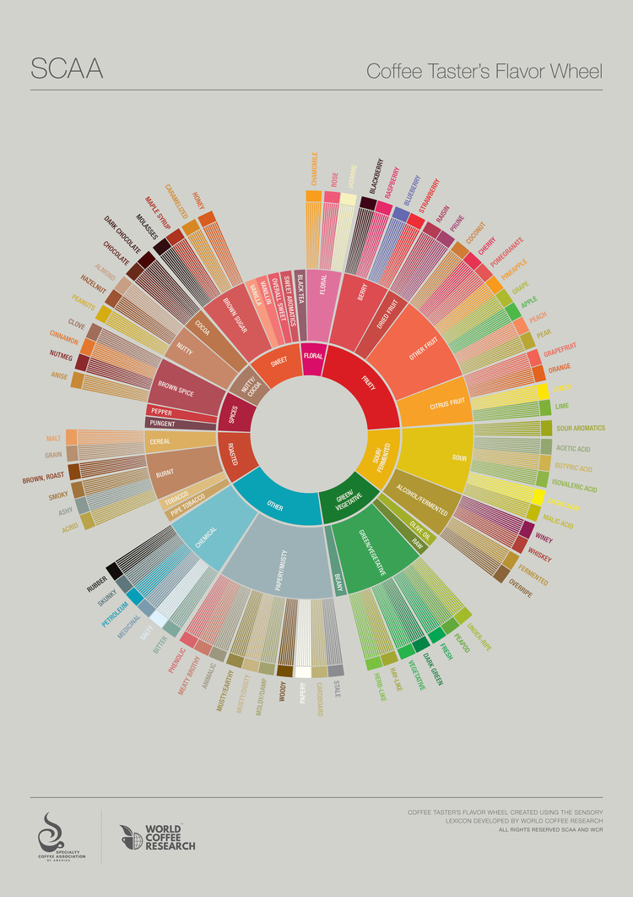

Lets find you some coffee...
Introduction

Ah, coffee. The fuel that powers humankind. It is a drink that exist in almost every country in the
world from the villages in Nepal to the cities of America. Dating back to the 10th century, it was
believed to be first discovered in Ethiopia. By the 15th century, it had reached areas including the
Middle East, Persia and Turkey. By the 17th century, it reached the rest of the world such as Southeast
Asia and the Americas.
The world of coffee appreciation, much like Wine, is a massive and complicated one. Every cup tastes
unique depending on where the coffee beans came from, how the beans were roasted and even how the cup
was brewed. For today, we hope to help you better appreciate humankind’s nectar of life through looking
at key aspects of coffee tasting and how different components can affect your morning cup of coffee.
Different people drink coffee for different reasons. You can drink coffee purely for the caffeine boost,
for something to go with your food, or even if it’s to camp at your local Starbucks and use their wi-fi
for the entire day. To better appreciate and describe a cup of coffee, connoisseurs evaluate their drink
on several dimensions. We will focus on four key ones: Aroma, Acidity, Body and Flavour.
Aroma. Just like wine, smell is a huge part of coffee appreciation. This is because the sense of smell
is closely related to our sense of taste. Before you gulp down that coffee, take a moment to put your
nose to the cup and let the aroma engulf you. Depending on the coffee, common aromas include caramel,
smoky, carbon, fruit, nutty and spicy. For the everyday person, some of these aromas may be subtle and
thus challenging to detect. It never hurts to try however, as getting a good whiff of your coffee will
only help to enhance its flavour when you drink it.
Acidity. Acidity is the dry, bright and sparkling sensation that gives coffee its unique taste. This is
a quality commonly associated with coffee beans grown at higher elevations, and thus deemed of a higher
quality. In coffee, there are many different varieties of acid type. This can range from citric acid
found in arabica coffee to Malic acid that provides coffee with a fruit-like flavour. Many coffee
drinkers associate highly acidic coffee to be the cause for their sour stomach.However, the cause for
this is not all types of acid, but rather by a specific type known as Quinic acid. Quinic acid increases
in stale coffee that has been roasted or brewed a long time ago, and rarely is from the origin of the
coffee bean itself.
Body. Also known as mouthfeel, a coffee’s body is a measure of its texture. When you drink your next cup
of coffee, feel how rich or intense the coffee is as it settles on your tongue. Just like aroma, there
are no set terms when describing a coffee’s body. Rather, connoisseurs will use a wide vocabulary to try
and accurately capture the feeling. Common ones used include “heavy-bodied” and “light-bodied”. A
heavy-bodied coffee will feel thicker and more viscous, while a light-bodied coffee will feel thinner
and less viscous. An easy way to understand the difference between a heavy body and a light body is the
feel of whole milk against skim milk as it settles in your mouth.
Flavour. The flavour of coffee is, simply, the taste of your coffee. Does it have a hint of honey? Do
you taste vanilla? It perhaps tastes like a mix of nuts and caramel? The descriptors of coffee flavour
are, just like when describing coffee body, as wide ranging as one’s vocabulary. Sweetness and
Bitterness, among the other factors mentioned such as Acidity and Body, are common go-to descriptions
when it comes to describing a coffee’s flavour.
With these four key traits of coffee, it should allow you to better describe the cup of coffee in your
hands. However, it’s also important to know how these traits come about during the coffee production
process, as this will allow you to know the variables that go into your favourite coffee. The key
factors are coffee bean origin, type of roast, and the way it is brewed. Let’s take a look at each.
Find Your Taste Profile

Different types of coffees will have varying and distinct flavors, some which may surprise you, and each
can elicit its own distinct experience in the person taking the sip.
Although in many peoples' minds, coffee is behind the wine, whiskey and craft beer when it comes to
palette-pleasing notes, terroir and delicate flavor profiles, specialty coffee is quickly emerging as
something to be debated over when it comes the finer points. With flavors ranging from intense blueberry
and Fuji apple all the way down the chain to the darker profile coffees, where you begin tasting ashy
and acrid notes.
In fact, coffee is amongst the most complex beverages you can ingest, with over 1,000 chemical compounds
responsible for everything from aroma to flavor. And those blueberry or apple flavors? They come across
because coffee's complexity contains similar, if not the exact same compounds found in these other
organic products, they simply need to be expressed properly.
In general, truly great coffee is not a dark roast. The roasting process, if pushed too far, tends to
char the delicate coffee bean, along with its natural sugars and organic materials, to create a bitter
and harsh flavor that can only be drowned out with milk and sugar.
Pro Tip: The mark of an overly roasted coffee is when the surface of the bean is oily to the touch. This
means that many of the flavor-containing compounds within the bean have been pushed to the surface
during the roast process and immediately dull the natural and complex flavor potential of the bean
itself. Generally, dark roasted coffees are simply poor-quality commodity coffees that are roasted to a
crisp to hide their underwhelming quality.
When talking about coffee tasting notes, focus instead on lightly roasted coffee, which allows the true
expression of the bean to shine through. With a light roast profile, the more delicate notes of
well-grown and well-sourced coffee can express themselves in ways never possible in dark roasted coffee.
To keep all of the beautiful coffee tasting notes in check, many roasters and even the Specialty Coffee
Association of America (SCAA) have developed widely-used coffee tasting wheels, like the one below.
Often times, when tasting coffee it is extremely helpful to have some direction on hand to inspire your
tastebuds. Below, you'll see SCAA's newest flavor wheel - released in 2016 - which is not only helpful,
but beautiful.
Making the Perfect Pour Over

Rinse and Repeat.
Before you brew, place your filter in the brewer and rinse it with hot water. This rinses out the paper
residue (which lends a kind of woodsy taste, seals your filter and warms up your brewer. Warming
everything up keeps the brewing temperature stable.
Grind right.
There are three main elements in the question of grind: when, how and what size.
Grinding right before you brew is important because fresh coffee begins to oxidize and age faster as
soon as you grind it.
Grinding your coffee on the correct setting is also key – the size of your grind particles affects
extraction, so getting this dialed in for your method is important. We have a basic guide to grind
here.
If all else fails, you don’t have a good grinder at home, or you can’t seem to get yours dialed in
properly, ask your barista at a Stumptown cafe or other local specialty coffee shop to grind it for you
for your method. Be specific about which type of brew device you are using. If you do have a grinder,
use this ground coffee to calibrate your grinder to match. Hint: putting ground coffee on a piece of
white paper helps you really compare the particle size.
And lastly, when it comes to type of grinder, burr is better. A blade grinder chops the coffee in
irregular sized pieces, leading to uneven extraction. We love Baratza electric grinders for their
quality, customer service and repair policy.
Perfect Your Pour.
The first pour is known as the bloom pour. The bloom pour saturates all of the grounds and will help
later with an even extraction. Pour about twice the amount of water to coffee and stir gently. This
should take between 30-45 seconds.
You should pour in slow and steady spirals to keep things even. A gooseneck kettle really helps you with
precision – avoid the light spots, go toward the dark
Clean Water Act.
Don’t use water to make coffee that you wouldn’t drink. Clean water = clean coffee. You’ll want your
water to be at around 205 degrees or about 30 seconds off the boil.
Ratio Test.
Using a consistent water to coffee ratio will help you with your dose. Then you can adjust for taste. As
a general rule, we suggest about a 1:17, coffee to water weight ratio. In other words, for the Chemex we
use 42 grams of coffee and about 700 grams of water.
And lastly, make adjustments! If your coffee tastes weak or sour, you should adjust your grind to make
it finer. If it tastes too bitter, adjust your grind to make it coarser.
Hot Coffee Recipes
Mexican Coffee
Ingredients
1 ounce coarsely ground coffee
2 cups water
2 ounces semisweet chocolate
1/2 cup milk
1-2 ounces dark brown sugar
1 cinnamon stick
1 orange rind
1/2 teaspoon vanilla extract
Cream
Coffee 'N Cream
Ingredients
1 large scoop vanilla ice cream
1/3 cup freshly brewed hot coffee
Chocolate syrup as a topping
Mocha

Ingredients
1/2 cup cocoa
1/2 cup sugar
2 cups milk
2 cups strong coffee, hot
1 cup chocolate ice cream
Cold Coffee Recipes
Iced Coffee

Ingredients
2 glasses full cream milk, or whole milk; chilled
2 teaspoons instant coffee
Sugar, to taste
1/2 glass crushed ice